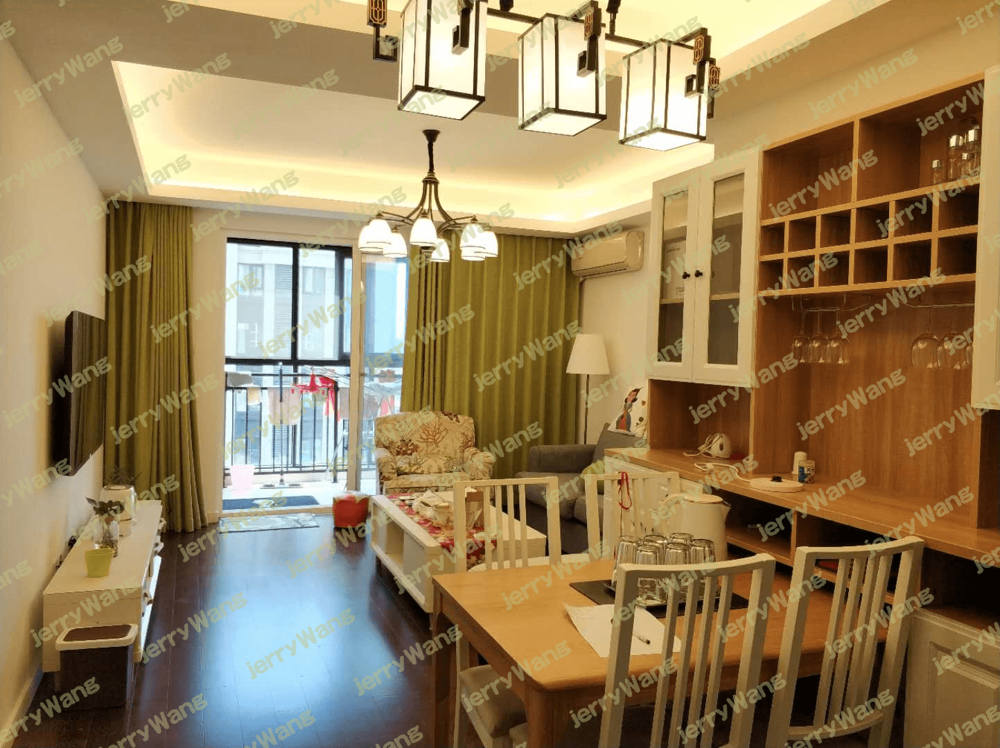
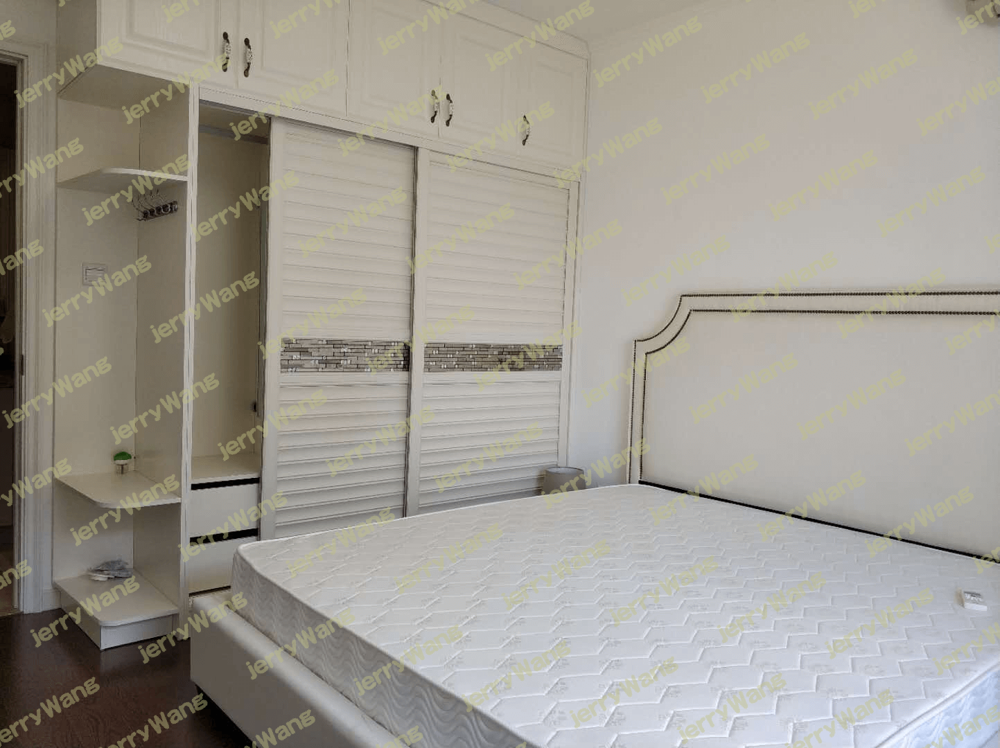
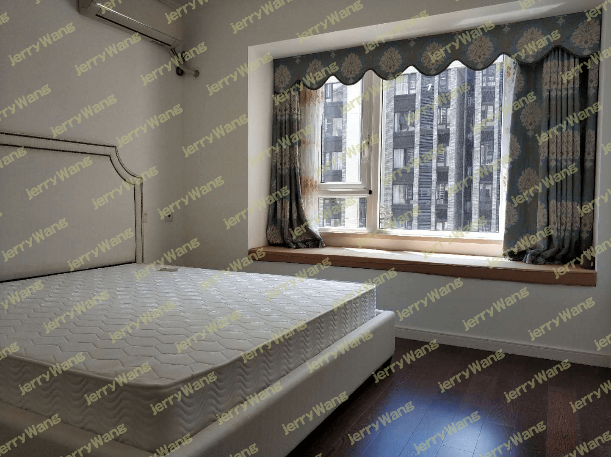
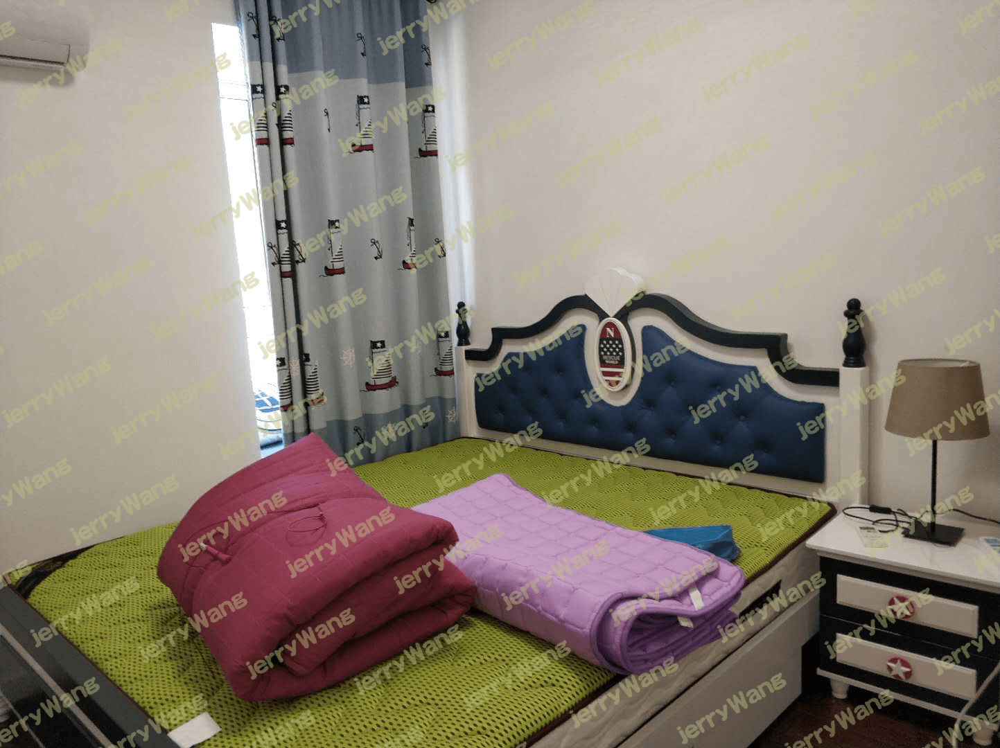
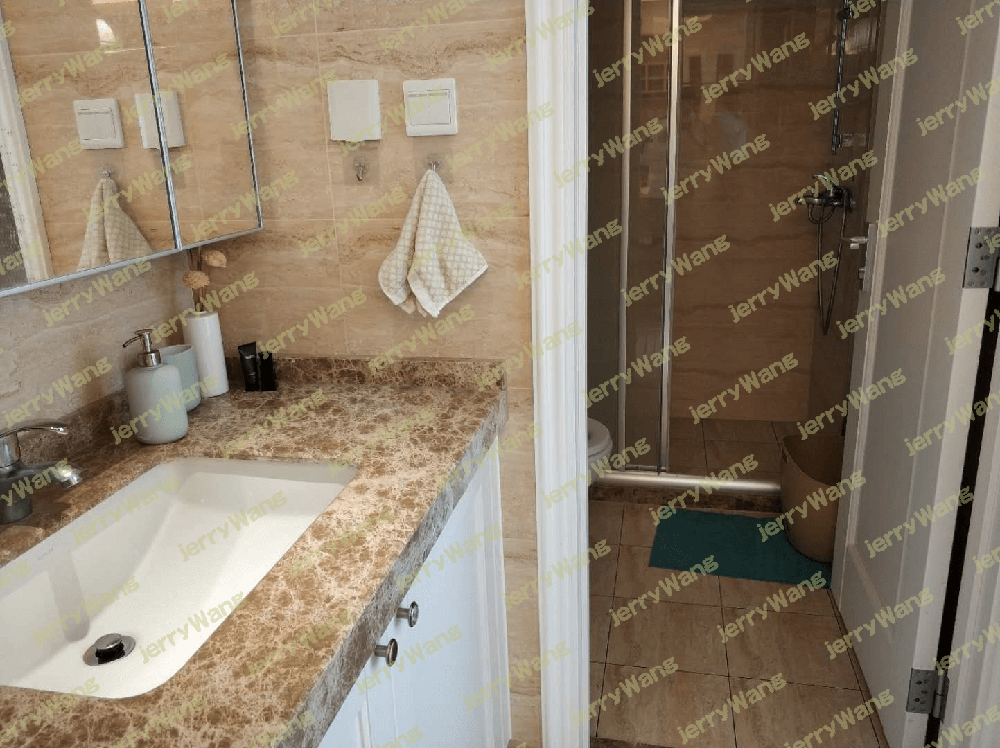
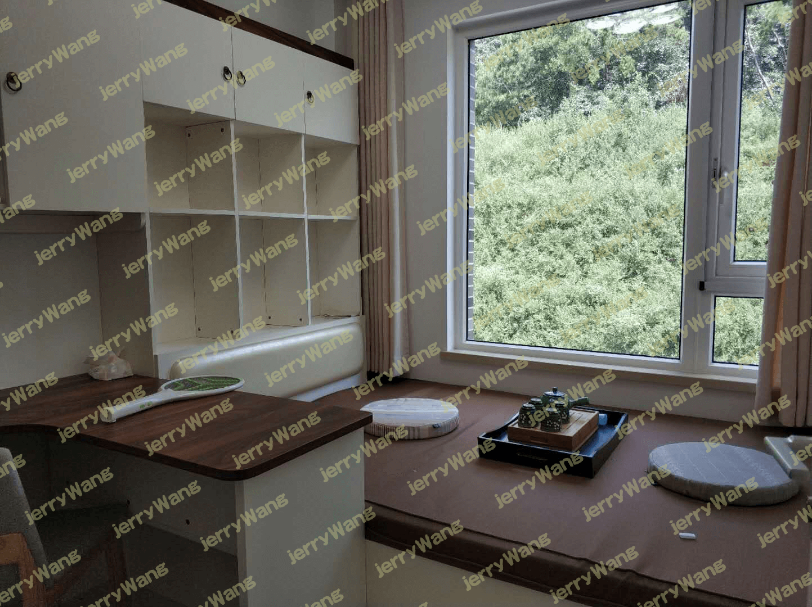
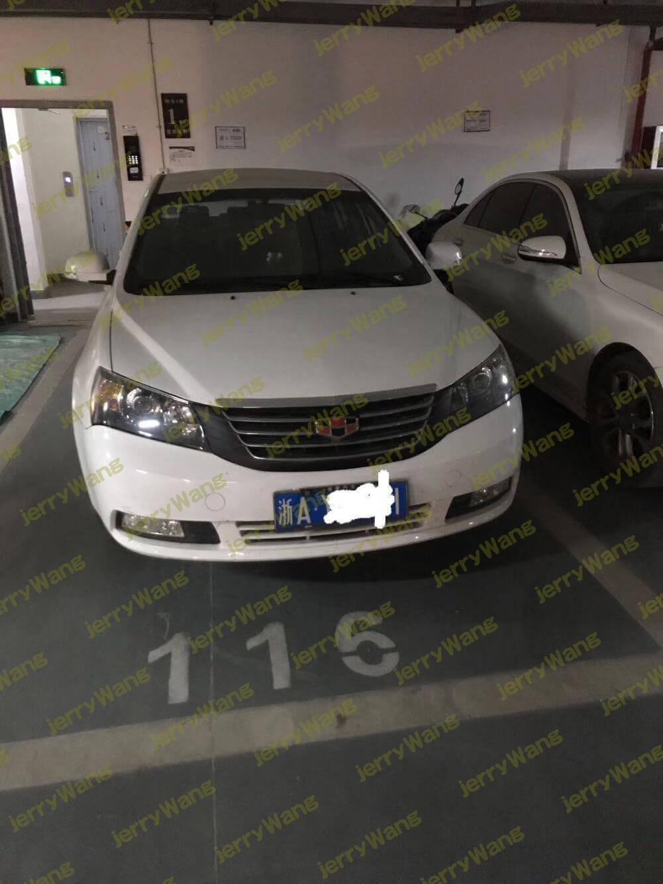

程序员买房指南——LZ的三次买房和一次卖房经历
引言
买房，一直是程序员群体绕不开的一个话题，尤其是到了一定年纪和人生阶段以后，买房这件事会变得越来越迫切。
为什么LZ一上来就说，买房是程序员绕不开的一个话题？
其实原因很简单，由于程序员这个职业的特点，导致大多数程序员都是拼搏在外，那必然就导致程序员这个群体中，除了极少数本地土著以外，大部分都有购房需求，不然就要一直租房，或者放弃当前的工作回老家，因此在生活上，程序员大部分都属于购房者的刚需群体。
但如果仅仅是有这样的刚性需求的话，程序员也不一定会面对买房这个话题，因为如果收入堪忧，根本买不起的话，那么买房这件事也注定与大多数程序员无缘。
就像要饭的就不太会考虑买房，因为他们的收入不足以让他们考虑这件事，当然了，这是以前，在现在这个社会，就不好说了，谁知道要饭的和程序员到底哪个收入高点呢，-_-。
哈哈，言归正传，对于大部分程序员来说，赚钱的能力都还是可以的，至少还房贷一般都问题不大，缺的都是首付。
也正是首付这座大山，拦住了大部分程序员买房的这条路。
上路要趁早
尽管有首付这座大山，但LZ依然劝大家，要尽快凿开首付这座大山，踏上买房之路。
说到这，可能有的同学要说了，“LZ啊，你不会是炒房者派来的卧底吧？”
对于这个问题，LZ只能说，“来来来，你来我面前说，保证不打死你。”
LZ郑重声明，LZ绝非是炒房客派来的卧底，-_-。
咳咳……
言归正传，为何LZ要劝大家早日上路？
理由再简单不过，因为房价可能会涨，越早买就能掏越少的钱。
那这个时候一定会有同学说，万一房价降了怎么办？马老板都说了8年后房子如葱，最不值钱的就是房子。
首先，马老板只说房子如葱，也就是以后房子会越来越多，并没有说房子会变成白菜价，也就是说，房子多如葱并不等同于房子就会变成白菜价。
其次，房子永远会有那么一批人买不起，不可能真的变成全民都买得起的白菜价，再者说了，就算真成了白菜价，那么问题来了，白菜是谁都吃的起的吗？
最后，房子的属性是商品，既然是商品，就可能会降价，比如你买了一个IPHONE，当时可能是5、6千的价钱，用了2、3年后，买这个手机可能只需要2、3千了，你多花了差不多一倍的钱，而你如果卖的话，可能连2、3千都卖不到。
但大多数人并不会觉得买这手机亏了。
为什么不会觉得亏？
首先是大多数人对于这个有了心理预期，知道它会降价，其次，早买早享受，毕竟享受了一两年较新的款式，付出点代价在大家看来也是应该的。
所以，为何到了房子这里大家就想不通了？
就算房子真的降价，那你也提前享受了，付出点代价也是完全说的过去的，毕竟住自己房子可比租房爽多了。
凡是那些说买房子不如租一辈子房，然后把买房的钱存起来拿利息，等着房子降价的，要吗是单身狗，没老婆没孩子，根本还没体验到租房的苦逼之处，要吗就是根本买不起房，所以就拿这种论调来安慰自己。
租房到底有多苦逼，只有租过的才知道。
想买个东西得思前想后，比如LZ，一直想要个台式电脑，愣是工作了7年都没买，是LZ买不起台式电脑吗？
非也，是租房买起来太麻烦，所以LZ一直憋着一股劲，等着自己买房子了再买，而且配置一定要高，CPU一定要I9，内存少了64G都不好意思说话，硬盘必须是SSD，512G的都不好使，必须TB级别，不止如此，配套也必须牛逼，键盘鼠标1000块以下不考虑，耳机怎么着也得个2000块以上才拿得出手，还有摄像头、耳机、音响、麦克风等等，没事就开个直播喊个“老铁666”。
除了买东西麻烦以外，租房还有个恶心的地方，那就是要一不小心碰见个奇葩房东的话，那酸爽简直是让你高潮迭起。
另外，租房经常需要搬家就更不用说了，每次搬家都累得要死，而且还要扔不少东西，浪费精力又浪费钱。
总而言之，租房的苦逼之处实在太多，此处不再一一列举，如果有兴趣的同学，欢迎在评论区补充你租房遇到的奇葩事，-_-。
说了这么多，是时候总结一下了，从上面的论点来看，如果你是刚需，那么买房子基本不可能亏，只管想尽一切办法上路即可，退一万步说，就算是最终房价降了，你最终亏了钱，但你也提前享受了几年，甚至十几二十年住自己房子的待遇，这是多少钱都换不来的，毕竟人生能有多少个十年二十年？
等到你头发斑白，就算房价真的便宜了，几块钱就能买套房，那又有什么意义呢？
第一次上路——坎坷
接下来，LZ就讲讲自己的第一次上路，这一次经历，LZ称之为坎坷，-_-。
很多人都会说，“LZ啊，不是我不想买，而是我首付不够啊。”
是的，没错，这是绝大多数人的理由，但是，如果你看完LZ第一次买房的经历以后，你可能就不会再说这句话了。
至少，你不会再轻易说这句话。
LZ第一次买房是2015年的国庆，至今LZ还记忆尤深，当时买房的初衷，就是因为LZ有了危机感，觉得北京的房子已经买不起，所以想要在老家给自己买套房子，以备不时之需，而且LZ此时也结婚1年半了，房子早晚总得买一套不是？
于是，趁着国庆假期，LZ和媳妇一起踏上了回家看房的路途。
看房子是个技术活儿，非常耗时，而且LZ老家是在县城，当时看房子是专门开车，到LZ县城所属的市区看的，因此也着急回县城。
于是，LZ用了最简单的办法选房，那就是找了一个关系比较近，而且刚好在市区买房的朋友，问了一下他们买的哪个小区，然后直接来到了小区的售楼处。
为什么这么相信这个朋友？
因为LZ的母亲和这位朋友的母亲认识，据LZ母亲所说，这个朋友和他老公，还有这个朋友的母亲是看了100多个小区，才选定的这个小区。
我勒个擦，简直无情。
到了售楼处，售楼小姐就开始唾沫横飞的给LZ介绍了。
当时基本只有两个选择，一个是期房，价钱便宜点，总价大约在60万的样子，而一个是现房，而且是楼王，但是价格要贵不少，总价大约要80万的样子。
对于买房这件事，因为LZ觉得一买就差不多是一辈子，因此肯定要买好的，所以LZ第一时间盯准的是80万的楼王。
不过这个楼王按照3成首付来算，需要大约24万首付，而LZ当时全身的身价，是6万块钱。
这怎么买？
别说是80万的这套了，就是60万的那套也买不起啊。
就是借钱，一下要借十几万，都快接近20万了，哪是那么好借的？
想到这，LZ基本上已经放弃了。
不过，售楼部小姐后面说了一句话，让LZ心中又升起了希望。
她说，最近公司有优惠，首付可以分期，半年付清即可。
而第一期需要交的钱，是6万元！
LZ一听，6万？可以啊，手里刚好有6万多呢。
不过后面的钱怎么办？
无意之间，LZ想起了自己的公积金，从上班开始到现在，LZ的公积金一毛钱都没动过，已经整整交了将近4年。
虽说一开始的时候，公积金很少，但这么多年积累下来，应该也差不多得有个8、9万块了。
于是，LZ开始和售楼部小姐商量取公积金的事情，而售楼部小姐一听，一再确保说，肯定没问题，公积金肯定能取出来。
LZ当然不会这么单纯的相信售楼部小姐的话，但是LZ也有自己的判断，因为LZ早就确认过，异地买房，是可以把公积金取出来的，这点上是肯定没有问题的，只是具体的材料LZ不太确定都需要什么。
而如果假设这公积金可以用上的话，那相当于LZ就只差不到9万块了，而距离首付交完还有将近半年的时间，这段时间LZ还有工资进账，而且中间有春节，不出意外，还有1-2个月的奖金。
到时候就算凑不够9万，估计也差不了太多钱，随便找人借一下，临时用一下应该问题不大，而且以LZ当时的工资水平，应该用不了多久就还上了。
这么一盘算下来，LZ果断的一拍桌子：“买！”
于是，当场交了6万块定金，同时也算是首付一期的钱，并且签订了购房合同。
买完房子，LZ开开心心的过了个国庆，节后便回去上班了。
上班第一件事，自然是咨询公司的HR，公积金怎么才能取出来，都需要哪些材料。
前面说了，公积金取是肯定可以取的，只要你买了房子，重点其实是哪些材料，HR给了LZ一个列表，LZ比对了一下，缺了一个很重要的东西。
首付发票！
马勒戈壁的，这是什么鬼？赶紧联系售楼部小姐问一下。
结果一问，LZ傻眼了，售楼部小姐说，首付发票是要首付交完以后才能给的，但是拿不到首付发票，就没法取公积金，拿不到公积金，LZ这首付就没钱交，这特么不是死循环了？
LZ质问售楼部小姐，“你当时不是说可以取出来的吗？”
售楼部小姐的回答是，“咱们老家这里取公积金不需要首付发票啊！”
LZ的心里只能一万只草泥马飞过。
其实最简单的办法，肯定是找人先借钱把首付交了，然后等拿到首付发票以后，再把公积金取出来，然后再把钱还给人家即可，等于是临时借用一段时间。
但问题是，LZ当时根本就借不来这么多钱，因为LZ的同事还没有成长起来，工资都还有点低呢。
有的同学，可能有疑问了，“这和你同事有啥关系？”
LZ只想说，那关系可大了，等看到LZ第二次买房你就知道了，/偷笑。
这时候，可能有的同学又说了，“那找亲戚朋友借点如何？”
LZ只能说，很难，在老家那种地方，一个月工资普遍是2000来块钱，谁能有20万这么多的巨款。
当然，如果你真要借，1分多甚至2分的利息，应该是可以借到的，但是，LZ是绝不会借这种钱的，也奉劝各位不要打这种心思，这么高的利息，就有点太不值当了，这房子不如不买。
因为钱的问题，LZ和媳妇当时还大吵了一架，也算是印证了“贫贱夫妻百事哀”这句话，当时LZ一气之下，还破罐子破摔的对媳妇说道：“不买了！交过的钱也不要了，就这么着吧。”
媳妇一听，两眼就开始泛红，LZ见状也是于心不忍，不过LZ当场并没有说什么安慰的话，都在气头上，拉不下那个脸，而且事情没有根本解决，安慰有个屁用。
不过LZ是很理智的一个人，气话归气话，6万块钱哪能说不要就不要了，开什么玩笑？那特么是辛苦挣来的啊。
所以，LZ再次给售楼部小姐打电话，开始软磨硬泡，软硬兼施，不但表达了LZ的苦逼之处，动之以情，也偶尔敲打下售楼部小姐，意思大致就是如果不帮忙的忙，这房子就没法买了。
好在售楼部小姐不算是那种巨坑的人，不管是处于好心，还是为了自己的业绩，最终还是给了LZ一个解决办法。
拿到发票以后，LZ顺利了取出了将近9万的公积金，并让HR办理了季度转，这个是在北京可以办理的，可以把公积金每三个月自动打给你。
有了这9万块，首付的问题基本已经解决了，虽说后面最终还是差了2万块，但因为钱少，所以很轻松的找人借用了下解决了。
原本购房这件事到此就结束了，无非是LZ接下来尽快挣钱，把欠的2万块首付钱还掉就行了。
结果就在16年3月份，也就是LZ刚买完房子交完首付的时候，LZ拿到了杭州阿里中间件的offer。
对于一个Java程序员来说，拿到阿里的offer不去肯定还是有些可惜的，哪怕是要换城市。
更何况，LZ觉得杭州这地方不错，房价和户口等都比北京要好搞很多，于是就毅然决然的离开了。
巧的是，LZ离开的时候，刚好按季度提取公积金过去了三个月，也就是说，LZ刚好可以在走之前，把北京的公积金取得一毛不剩。
不过事情总是不会那么顺利，就当LZ欢天喜地的准备收钱的时候，突然发现，HR当时并没有给LZ办理按季度转，她给忘了！忘了！
这可咋办？
三个月公积金可是不少钱哦，而且直接取走省事啊，留在北京或者转走还是很烦的。
不过，好在LZ公司的HR虽然把事情忘了在先，但总体还是很靠谱的，最后HR妹子还是帮忙想办法给解决了。
就这样，LZ在离开北京去杭州入职之前，刚好把北京的公积金取得一干二净。
当时LZ觉得，就冲这一点，这房子就算是买值了，至少把公积金充分利用了，而且以后的也能取。
完美！
中途小结
这一次买房，是LZ第一次买，虽说遇到了点坎坷，但总算最后啃下来了。
从这次真实的买房经历，LZ也总结了几点小小的经验和教训，在此献给所有程序员。
- 买房不一定非要自己挣够首付，因为往往等你挣够了，房价早就上天了。更何况，看完LZ的买房经历，你还有什么资格抱怨你的首付不够？办法总比困难多。
- 买房这事模糊不得，凡是重要的事情，必须早早落实，比如LZ取公积金这件事，就没有早早落实，只是大概知道可以取，但怎么取，需要什么材料，之前并没有了解清楚，以至于差点毁于一旦。
- 房贷一定要30年，不要搞什么10年、20年，更不要全款。有的同学可能问为啥？其实很简单，房贷是你这辈子为数不多可以利用的杠杆，必须用到极致，这可以让你的财富快速积累。
- 公积金是个好东西，要充分利用起来，这部分钱存在ZF那里，基本上利息都亏掉了，要尽早利用起来。你说怎么利用？买房啊！
第二次买房——神奇
第二次买房经历，LZ用神奇这两个字来形容，看完你就知道为什么LZ称之为神奇。
之前在《2016——注定不平凡的一年》这篇文章里，LZ已经详细介绍过第二次买房的经历，但是当时写的比较独立，没有连续性，为了更好的阅读体验，LZ会在这篇文章里连起来再讲述一遍。
既如此，咱们接着文章前面讲的，在LZ第一次买完房以后，当时的首付除了LZ自己本来存的钱，以及公积金取出来的钱，还找同学借了差不多2万块钱（说好三个月内还），才把那套房子啃下来。
而LZ入职阿里，是16年的3月中旬，这时候，LZ刚交完最后一期首付，可以说是身无分文。
而且，换工作本身也会损失一部分钱，比如一个多星期没上班的工资钱，还有因为跨城市搬家损失的房租钱等等。
可想而知，LZ刚到杭州这个月，基本是靠着吃土过来的。
不止如此，LZ接下来还要每个月还将近6000块的房贷（当时LZ房贷只搞了10年，-_-），而且还要想着点存钱，尽快把那2万块还给人家。
这种经济情况，可以说是LZ有史以来最差的了。
但是，即便如此，LZ在杭州安顿好以后，LZ想到的第一件事，依然是让媳妇没事去看看房子，了解一下杭州的房市行情。
为啥？
因为特么在北京吃了房价太多亏了，而LZ觉得杭州有阿里，互联网不会太差，房价应该有上升空间，说不定哪天就像北京一样买不起了，所以，当然要早早做好准备工作了，就算买不起，最起码也要先了解清楚行情，做到了然于胸。
更何况，LZ的老婆在16年6月中旬到了杭州以后，一时之间也没找到工作，因此平时除了偶尔面试一下，也算是时间充裕，也算是给老婆找了个事干。
就这样，虽然LZ身无分文，但LZ媳妇仍然没事会去看看房子。
这样的生活持续了大约两个星期，直到一天晚上，剧情出现了很大的转折。
那天是6月30日，LZ记得非常清楚，当时LZ刚把那2万还给人家不久，全身上下花的只剩500块钱。
不过这其实LZ算准了的，6月30日这天刚好发工资，因此虽然身上只有500块钱了，但LZ却一点也不担心接下来的花销，相反，LZ反而觉得一身轻松。
因为买第一套房子欠下来的首付钱，终于是彻底还干净了，除了房贷以外，LZ终于是进入了无债一身轻的日子。
然而，LZ还没有高兴太久，媳妇的电话就打过来了。
“老公，我看到一个房子，好便宜啊，总价才60万不到，算下来一平米才将近7000块钱。只不过人家明天就封盘了，再开盘估计就要涨价了，要是今晚要定的话，得交4万块定金。”
LZ当时听到这个消息，一开始是不相信。
为啥？
总价才60万不到？
纳尼？比LZ老家买的房子还便宜？要知道，LZ老家刚刚买的那套，可是花了将近80万啊！
虽说老家那套面积大的多，140多平，算下来单价比杭州这个要便宜点，但那又如何？
60万依旧还是很便宜啊！
这特么不会是套假房子吧？又或者是不属于杭州，而是周边的？
LZ自然把这些疑惑都丢给了媳妇，但是媳妇一口咬定，这就是杭州的房子，不会错的。
这下LZ纠结了，要说这房子不买的话，LZ总觉得有点可惜。因为这是LZ第一次离安家如此之近，之前在北京，买房子这事压根是LZ想都不敢想的事情。
但要说买吧，LZ看了看自己的银行卡余额，无奈的摇了摇头。
这特么怎么买？连个定金都不够啊！
虽说一会儿会发工资，但是也远远不够4万块啊。
而且，这才刚刚把上一套房子的首付钱还完，难道又要再次借钱，再次勒紧裤腰带还首付钱吗？
这样的日子，什么时候是个头啊？宝宝心里苦啊！
更重要的是，就算LZ想勒紧裤腰带，谁又能借LZ这么多钱呢？
但是，越是复杂的情况，LZ的思路就越清楚。
60万都不到的房子啊！7000块一平啊！
只要这房子是正儿八经杭州的房子，那就铁定是百分百赚的，不买肯定会后悔啊！
有的同学看到这可能会说，“7000块啊！还是很贵啊！”
LZ只想说，你如果看多了北京动辄5、6万一平，甚至十几万一平的房价，然后骤然看到个7000块一平的，你肯定不会觉得7000块贵的，你只会觉得这房子简直就是白菜价。
而且那个房子的位置媳妇在电话里也告诉LZ了，LZ查了下，离公司8公里，开车的话，估计也就是20分钟的样子。
这距离，说实话，对于在北京待过的LZ来说，这特么就是相当于在家门口上班啊。
一通内心挣扎下来，LZ还是决定，不论如何，也要去现场看看再说。
既然要去现场看看，那甭管用不用得上，肯定要先把定金带上，不然到了地方再借钱岂不是太晚了吗？
于是，LZ抄起电话，给北京的老同事去了两个电话，不到半个小时，LZ就借了5万块，加上一会儿发的工资，应付4万块的定金肯定是绰绰有余了。
就这样，6点下班以后，LZ早早的就离开了公司，奔赴售楼处。
到了地方，LZ看了下样板房，觉得十分不错，而且这个房子虽然是期房，但其实已经建的差不多了，所以倒也不太用怕烂尾什么的。
最终，在再次确认房子确实是属于杭州以后，LZ果断的交了定金。
而售楼部小姐告诉LZ，要在两周内把首付交齐。
不过LZ由于走的匆忙，还带着工牌，后来被售楼部小姐看到，售楼部小姐又补充了一句，是阿里员工的话，可以延迟到1个月交首付。
纳尼？还有这待遇？
不管怎么说，定金交了，没有回头路了，接下来就是借钱、借钱、再借钱！
具体借钱的过程此处就不详细描述了，这个没有可复制性，说了也没什么意义。
不过有一件事还是要提一下，其中的1万块钱，是来自于LZ粉丝群里的一位同学主动拿出的，本来LZ就是在群里闲聊，提到了首付还差不少钱，压根没打算从群里借钱，而且，也觉得不会有人借钱。
毕竟几百几千的，说实话帮助不大，但是上万的话，估计不太会有人放心借给LZ。
但是这位热心小伙伴，主动提出要借给LZ钱，尽绵薄之力，更是直接要了LZ支付宝账号，连个电话都没打，就把钱给打过来了。
着实是让LZ感受到，人间自有真情在啊！
当然，这1万块钱，LZ已经早早的还给了小伙伴，但这份帮助，LZ还是一直都记得的。
就这样，首付到手，接下来的事情就比较简单了。
不过杭州买房子与之前在老家有一点不同的是，要先经过银行的审核，才签订购房合同。
对此LZ倒没有什么疑问，因为这样的流程，其实也是为了保障买方的利益，毕竟等你交了首付，才发现批贷通不过，岂不是也很蛋疼？
当然了，就程序员的工资来说，一般批贷都不是什么问题，完全可以达到要求。
就这样，用了差不多不到一个月，LZ就又拿下了一套房子，并再次进入了还钱的日子。
而这一次，是要还整整20万，这20万，刚好就是房子的首付。
也就是说，LZ这个房子的所有首付都是借来的。
空手套白狼，LZ这辈子也算是玩过了。
这一次买房的经历，绝对堪称神奇了。
更神奇的是，自从LZ买房以后，LZ的那套房子，就在以每一个星期1、2千的速度在上涨。
简直疯狂！
中途小结
由于第二次买房价钱太便宜，LZ经常被同事笑称，这套房子是充话费送的。
不得不说，这一次买房的经历确实神奇，让人意想不到，但即便如此，LZ还是觉得有一些可以参考的价值。
- 再次用事实证明，买房不一定非要攒够首付才能买！甚至恰恰相反，除了少数二代和土豪以外，大部分人买房都是在首付不够的情况下买的。
- 二线城市（或者说一些准一线城市）会比目前的北上深更加适合程序员，从工资和房价的比例来算的话，这些城市应该是比例最高的。
- 和同事们搞好关系，说不定这帮一起战斗过的人，在你缺钱的时候，比你的亲戚朋友更加靠谱。有的同学可能会问，难道是因为同事的爱更加深刻吗？或者是因为战斗的情谊更加珍贵吗？咳咳，非也，是因为程序员一般工资都不低，而且不爱乱花钱，他们有闲钱啊！
- 如果钱实在不多，那么房子位置差点，或者小区物业差点等等这些问题都不大，先上车再说，这样你至少不会掉队，大不了以后再置换嘛。
第一次卖房——曲折
第一次卖房这件事，LZ称之为曲折，至于为什么这么形容，你看完就知道了，简直能特么写一部短篇小说。
16年7月份买完房子以后，LZ心里的一块石头总算了落了地，不管怎么说，现在总算是有一套房子了，再也不用担心未来房价上涨了。
事实也证明，这套房子买的很是时候，截止到现在，也就2年多点的时间，这套房子已经翻了3倍多了。
按理说，作为一个小老百姓，LZ已经赚了个盆体满钵，而且老家一套，杭州一套，也算是“儿女”双全，应该及时收手，结束这场没有硝烟的房市征战了。
但是，事实证明，人的欲望是无穷无尽的，因为LZ的贪心，LZ并没有停下与房子纠缠的脚步。
不过，刚借了20万，LZ短时间内肯定是无力折腾了，所以，在16年7月份买完房子以后，直到2017年的五一这段时间，LZ基本是处于闷声还钱的阶段。
然而，当钱还完以后，LZ的心思又开始活络了。
不过，一开始的时候，LZ并没有打算买或者卖房子，而是打算装修房子！
租了这么久的房子，如今房子买好了，首付钱也还完了，自然是要赶紧装修一下住进去咯。
于是，LZ和媳妇商量了下，等差不多存够个5万块，就开始装修。
那段时间，每天下班以后，LZ和媳妇没事就讨论房子装修的事，LZ也可以明显感觉到，一提到装修这事，媳妇每次都是双眸发亮，一脸期待的样子。
然而，就当LZ攒够了钱，马上就要开始装修的时候，LZ无意间听到一个消息。
“杭州2022年要举办亚运会，而且现在每一个已婚并且拥有杭州户口的人，都可以且只能买两套房。”
LZ琢磨了下，这个消息可能意味着两件事，第一，2022年的时候，杭州的房价有可能再涨一波，可能性比较大。第二，LZ还能在杭州再买一套房，而且就算再有钱，也只能买一套，第三套不让买了。
这下LZ对装修这件事有些犹豫了。
为啥？
因为LZ做事情喜欢一步到位，一劳永逸，既然还能再买一套，而且2022年又可能涨价，那依照LZ的性格，肯定是一鼓作气，把两套房子都给买了再说啊。
不过虽说LZ有这个想法，但其实LZ此时，还是更加倾向于先装修。
一个是看到媳妇那么开心，不忍心让她再等，另外一个则是，LZ当时一个月房租是2200，房贷才2300，你说这交着房租是不是贼闹心？
不过，后来LZ到小区交房的时候，感受了一下小区的情况，却逐渐改变了主意。
为啥？
这套房买的确实很便宜，也赚了不少钱，但便宜也有便宜的劣势，那就是小区挨着高架，难免会有些噪音，而且小区也比较低档，所以物业也只能算是一般般。
而LZ老家买的那套80万的房子，基本是属于老家的豪宅（地理位置基本相当于西湖的湖中心，-_-），所以物业非常好，这样一对比，更让LZ觉得杭州这套物业不够好。
更何况，装修这件事虽说听起来美好，但谁都知道，装修是一件非常累人的活，尤其是LZ和媳妇都要上班，而且还没车的情况下，装修那更是一件麻烦事，就算你搞个全包，你不也得经常去盯着点吗？
不过最终让LZ下决心的，还是因为房子的楼层。
当初便宜的低楼层都卖完了，太低的话，比如1、2层这种LZ是坚决不考虑的，因此LZ买的楼层比较高，大约是28/33的样子（具体不记得了，LZ经常忘记自己的房子在哪，-_-），而且之前在北京一直住高层，感觉高层也可以接受，最起码视野宽阔。
但LZ去真实感受过以后，就有点小后悔了。
为啥？
房子是一梯两户，也就是说，大约60多家共用一个电梯，而LZ又住的比较高，可想而知，以后等电梯肯定会成为常事。
最重要的，还是LZ其实是有点恐高的，所以每次做电梯到那么高的地方，都有点心有余悸，而且现在的商人大家懂的，电梯到底安不安全，鬼特么才知道啊！
看到这可能有的同学会说了，“既然你对这房子这么不满意，当初为啥还买呢？比如楼层咋不买个好点的，不高不低的？小区咋不买个好点的？”
呵呵，如果你真有这样的疑问，LZ真是要无语了，你说能特么为啥？
因为没钱啊！这个最便宜啊！
还能为啥？
当然了，不愿意住归不愿意住，但不代表LZ买这房子后悔了，相反，LZ一直觉得买对了，毕竟赚了不少钱呢。
但甭管怎么说，LZ住是不愿意住了，准备把这套房当做投资，也暂时不装修，到时再买一套二手，直接住进去。
这样的话，不仅省了装修的麻烦，而且也不用等着散甲醛了，更可以吃一堑长一智，好好挑一挑楼层物业什么的。
一切听起来都是那么美好，那么问题来了，钱从哪来？
卖老家的那套房子！
这并不难想到，只有这样LZ才可能凑够钱。
而且老家那套房子，LZ原本是为了在北京长期打拼准备的，因为在北京买不起，所以就买了一套老家的，而且老家那套离高铁站不远的，LZ从北京坐高铁回老家只需要两个半小时，然后再坐车10分钟就能到家，到时候老婆孩子可以在老家长期生活，而LZ则每一两个月回来一次。
这其实是LZ当时精心安排的，虽说有点奔波，但其实已经是最好的安排了，谁让咱买不起北京的房子呢？
然而，这一切现在已经没有意义了，因为LZ户口也转到杭州了，房子也在杭州买了，哪怕杭州这套房子再差，那也是套房子。
老家肯定是回不去了，更何况，LZ的老家其实是在县城，而老家买的那套房子是在市区，所以，那套房子目前完全就属于闲置状态，还得每年交着昂贵的物业费，还着房贷，租还租不出去，因为还是毛坯。
而且就算能租出去，LZ也不太舍得，毕竟这套房子属于高档小区，租出去太糟蹋了，而且LZ老家那四五线城市也租不上价钱。
那就啥也别说了，卖吧！
于是，LZ就随便在网上找了个老家那城市的中介，把房子给挂上去了。
至于价格的话，LZ也算了下，当初买的价钱是70多万将近80万，再加上贷款的利息，以及交过的税费，LZ的成本差不多是82万左右。
而LZ当时也简单了解了下，当时LZ那小区的房价大约是6000多那么一点点，核算成总价也就是可以卖85万多点。
而中介说了，一般挂上去的价格都要稍微留点还价的余地，于是，LZ给了中介一个价钱——90万！
挂上去以后，LZ便开始不断的接到电话，不过大多都是一些扯淡的电话。
直到有一次，有一个中介A说，有买家A愿意全款购买，问能不能便宜点。
LZ一听，全款好啊，这样能省LZ不少事，而且可以尽快拿到钱，于是LZ思来想去，最终给了一个价钱——88万。
而这个价钱买家A也答应了，也很爽快的交给了中介A一万块定金，LZ当时都以为这笔88万的买卖要做成了。
结果就在此时，又来了一个中介B，说有个买家B也看上了，虽然这个买家B是按揭，但人家上来就给92万，而且也交了定金，整整比那个买家A多了4万块钱。
我勒个擦？4万块啊！
LZ肯定是动心了啊！但LZ并没有第一时间答应。
为啥？
因为这个中介B所在的中介公司，是LZ媳妇的一个亲戚C开的，这也是LZ听到了中介B的公司名才想起来的。
其实C开了个中介公司，这事LZ和媳妇早就知道，但为啥没直接找他帮着卖呢？
其实是因为LZ之前曾很认真的问过媳妇一句，“媳妇，咱小两口就有话直说了啊，以你的判断来看，你觉得你这个亲戚靠谱不？”
媳妇听完，略微犹豫了一会儿，然后缓缓的摇了摇头。
看到这个，LZ就果断放弃了找C帮着卖房的打算，毕竟如果人不怎么靠谱的话，办事一般也不怎么靠谱，更何况，有个常说的词叫杀熟，说的就是关系越近越容易被坑，除非是特别近，比如父母或者亲兄弟姐妹这种关系。
也正因为如此，哪怕中介B这边买家多出了4万块，LZ也有些犹豫。
不过最后LZ还是选择了中介B，至于原因的话没别的，毕竟4万块，光这一个理由就足够了，而且LZ还是愿意让自己去相信，亲戚是不会坑亲戚的。
于是乎，LZ和媳妇商量了下，既然都已经选择了中介B，那也索性不瞒着C了，便给C打了个电话，说卖房子刚好来到了他的中介公司，之前都忘了他有个中介公司，否则就直接找他了。
这自然是LZ找的一个说辞而已，毕竟卖房子没有直接找他，多少还是要解释下的。
C听了以后说应该早点找他，现在中介B已经和LZ谈好了，他也不好意思压人家的中介费了，否则原本可以不要我们的中介费。
对此LZ表示是完全OK的，因为本来也没打算占这个便宜，只要能安安稳稳把房子卖出去，交个9000块的中介费LZ还是完全不在乎的，而且也是应该的。
C听了以后也表示，会交代一下中介B，让他务必保证我们的利益，让LZ放心就行。
既如此，LZ自然是果断把那个买家A给拒绝了。
这时候有的同学可能要说了，“你都收了买家A的定金了啊，拒绝了人家不需要赔钱吗？”
LZ只能说，LZ并没有收到买家A的定金，买家A的定金是给了中介了，而且LZ也没有和买家A或者中介签订任何协议，毕竟LZ人一直在杭州，根本就没回去，所以，和买家A之间，最多只能算是个远程口头协议而已。
虽说拒绝买家A从良心上来说有点不好意思，但谁家的钱都不是大风刮来的，毕竟是4万块钱，LZ没有理由不要。
后来，这个买家A不知道从哪里要到了LZ的电话，还给LZ专门打了电话。
意思是说，他为了买房子把原来的房子都卖了，总之就是各种不容易，各种没退路，但LZ就是一句话，“很抱歉，毕竟是4万块钱啊。”
最后这个买家A似乎是有点恼羞成怒了，直接说了句，“他出92万，那我就出95万！怎么样？”
LZ当时一听，这个老哥看样子是真上头了啊，都开始搞起竞价了，但LZ内心肯定是不相信的，毕竟从88万涨到95万，这特么也太夸张了，而且听他的口气就是赌气的那种，根本不像是真心的。
但就算他不是真心的，LZ也不能直接说你出95万也不卖你啊，所以LZ只能让他自己知难而退，便认真的说了句，“你要是愿意出95万的话，我肯定是愿意卖给你的，但是得给我交个定金，最起码要5万块，否则我确实没办法就这么相信，希望你能理解。”
果不其然，这个买家一听LZ这么说，深深的叹了口气，然后说了句“还是算了”，就把电话给挂了。
就这样，最终LZ的房子算是以92万的价格定了下来，而LZ也开始和中介B沟通起了具体的交易过程。
按照中介B所说，卖房如果是按揭的话，LZ应该最少要回老家两趟，第一趟主要是签合同，交首付这些，第二趟则主要是过户。
但是，由于LZ的房子没满二（当时还差大概5个月的样子），提前交易的话，要多交5%的税（将近5万），所以买家想满二以后再过户，LZ只能先签合同拿首付，至于尾款的话，要等到满二以后过户才能拿到。
听到这个，LZ顿时有点犹豫了，要等差不多半年才能拿到所有的钱？那LZ现在卖个什么劲啊？
还不如先不卖，然后等到满二以后再卖呢，反正怎么都要等到那时候才能完成交易，现在只拿个首付，钱又不够LZ买杭州的房子，有啥用呢？
不过，LZ并没有一口回绝说房子不卖，而且也确实是巧，当时LZ刚好有事要回老家一个星期，于是LZ便和中介B说，如果自己确定要卖的话，会趁回老家的这个星期，挑个时间去市区一趟，把合同签了，顺便把首付收了，然后等满二以后，再回来进行过户。如果确定不卖的话，也会在这个星期内给他一个确定的答复。
其实这已经是LZ的缓兵之计了，这个时候，LZ已经更倾向于不卖了，因为要等半年拿到尾款实在太久了，还不如等到满二再卖，到时候能省5%的税，说不定还能卖高点。
只不过考虑到C是LZ媳妇亲戚的关系，所以才没好意思这么快就说又不卖了。
这就是找亲戚的弊端了，如果是不认识的中介，那LZ就直接说不卖就完事了，就和之前那个中介A一样。
结果，让LZ意外的事情发生了，就在LZ刚回老家的第二天，中介B突然打电话说，买家已经把50万首付打到他们公司的账户了，他们先代收了，让LZ直接去签合同拿首付。
纳尼？还能这样操作的？
这LZ一听就火了，第一时间就给中介B打电话，“谁特么让你随便帮我收钱的？谁给你的这个权利？我不是说了还没确定要卖呢，你替我收个毛的钱？”
结果中介B竟然还一口委屈的说，“是C总让我务必保障你的利益，所以我就先把钱收了，免得到时候买家反悔再不掏首付。现在这样你来了直接拿钱，一点风险都没有了。”
对于中介B的这个说法，LZ对此是嗤之以鼻的，先收钱肯定是为了生米煮成熟饭，想挣这笔中介费而已，什么保障LZ的利益，纯属扯淡。
原本LZ压根犯不着跟这个中介生气，因为他收钱是他收的，是他自己过线了，LZ压根就没收到过买家一分钱，也没签过任何协议，所以哪怕是他代收了首付，LZ还是可以随时退出，而不需要付任何法律上的责任。
但就在LZ跟中介说，让他把定金和首付退给人家，LZ不打算卖以后，很快C的电话就打了过来。
C和LZ扯了很多，但核心的意思就是，如果LZ就这样不卖了，让他在这个中介B的员工面前很没面子，让LZ还是把房子给卖了，去签合同拿首付。
纳尼？还能这样操作的？
LZ不卖房就是不给C面子，这房子还特么非卖不可了？
卖个毛！凭啥LZ就得为了你的面子牺牲，非得卖房不可？本来LZ虽然倾向于不卖，但毕竟没有百分百确定，但现在啥也别说，就是不卖了，爱特么谁谁。
结果中介B听到C说LZ不卖了以后，又给LZ打了个电话，说如果LZ现在说不卖，对方可能起诉LZ，让LZ赔偿定金。
哟？装委屈不行，现在又开始威胁LZ了？
去你大爷的，就是不卖。
LZ当时的原话是，“如果法院真的判我要赔偿定金，那我就赔，但现在我就是不卖了，你让他去告吧。”
其实这话LZ是冲着中介说的，意思也很明显，就是你别威胁LZ，老子不吃这一套。
最后，中介B和LZ媳妇的亲戚C看LZ油盐不进，只能让买家来把他的定金和首付又拿了回去，这件事也算是告一段落。
说实话，LZ总觉得那个中介B说的有点假，因为LZ不太相信那个买家，在完全没见到LZ的情况下，就敢把50万首付打给中介，这应该是那个中介想圈住LZ的套路而已。
不过这都不重要了，反正是不卖了，而且事情也结束了。
就这样，五个多月过去，到了2017年的12月份，LZ的房子终于满二了，这也意味着买家不需要交5%的税了，而LZ自然也能多卖点。
不过此时LZ的房产证还没有办下来，所以LZ倒也没有急着立马挂上去卖，直到2018年的1月份，LZ拿到了房产证，此时才算是万事俱备，连东风都不欠了。
然而，此时杭州的房价又涨了不少，LZ觉得就算卖了老家的房子，也不一定能换一套杭州的房子，所以这个时候，LZ又特么有点犹豫了。
到底是装修第一套房子，还是卖老家房子然后在杭州再买个二套？
思来想去，LZ觉得，还是装修第一套房子吧。
毕竟如果卖了老家的房子，又不够在杭州买的话，那还不如留着老家的房子。
就这样，2018年春节前的那段时间，LZ和媳妇又开始讨论起了装修，甚至连车都选好了，因为此时已经早就存够了装修钱，而且还有剩余。
原本什么都定的差不多了，就打算过完年以后，差不多就开始动工了。
结果，过完年以后，无意之间LZ看房产APP的时候发现，老家的房价涨了，而且还涨了不少，LZ的那个小区，都快1万1平了。
这就意味着，LZ的那套房子现在可以卖将近140万！比之前的92万可是多了40多万啊！这才过去半年多点而已！
简直无情啊！
但不管怎么说，卖了老家的房子以后，似乎又买得起杭州的房子了，就算买不起，差的肯定也不多，还是完全不成问题的。
就这样，LZ犹豫了一小段时间，最终还是决定，卖老家房子！
这一次，LZ没有直接找中介，而是直接把房源信息挂到了网上，等着中介来找自己。
结果这下LZ的电话炸了，一连几十个电话打过来，全是中介公司，主要就是登记一下LZ的房子信息，比如几栋几单元几楼、满不满二、价钱多少等等。
直到LZ把信息撤掉，电话的频率才逐渐下降下来，但那几天还是偶尔会来一个中介公司的电话。
既然是卖房子，最敏感的就是价格了，当时LZ对房价比较看好，所以开得很高，张口就是145万，最低可还到140万。
结果差不多等了1个多月快2个月了，一个来真心谈价钱的都没有，全是中介公司的烟雾弹，都说是手里有准客户，但其实就是要信息的，根本就没有买家。
逐渐的，LZ也渐渐失去了耐心，同时也意识到140万太高了（一开始也确实是乱开的价），所以开始了降价，这一降就是5万块，也就是135万。
但是，让LZ失望的是，135万依旧是无人问津。
这样又过了一个月，LZ意识到，135万还是有点高，于是乎LZ又降了5万，变成了130万。
这样一来，终于有一个中介说，有一个客户130万想买，不过对方还想还价，他正在跟对方谈。
此时已经来到了2018年的7月份，距离LZ初次挂牌已经过去了4个月。
好在这次终究是没让LZ失望，买家同意了130万的价格，而且和这个中介交流的过程中，LZ也觉得，这个中介是比较靠谱的，并且LZ和中介梳理了好多次交易流程，总算是把交易流程彻底定了下来。
毕竟LZ远在杭州，回老家一趟不易，肯定是要把所有流程都安排好才行。
总的来说，交易流程分这么几步，首先是签二手房交易合同，然后LZ陪买方去银行面签，紧接着买方交首付，然后LZ拿首付去银行还贷（因为LZ当初是贷款买的），接下来就等银行出一个还贷证明（大概一周），然后拿着去房管局解押，紧接着就进行过户，然后基本上就等着银行放款了。
整个过程下来，LZ回了老家两趟，共计花费时间1个半月拿到了所有的钱。
总的来说，真正卖房的这次经历还是非常顺利的，这其实主要还是中介比较靠谱，什么事都提前安排好了，所以LZ回老家办事都比较顺利，没有出现什么意外，否则可能不止要回老家两趟。
不过，从2017年的6月份左右，到2018年的8月份，整个卖房周期足足跨越了1年零2个月，可谓是曲折离奇。
不论是LZ的心里变化，还是亲戚事件，都给这次卖房经历，增加了不少意外性。
好在最终，房子还是顺顺利利的卖出去了，而且按照最后的成交价来算的话，LZ差不多赚了足足40多万，将近50万的样子。
这也算是瞎猫碰见了死耗子，让LZ给刚好撞上了。
中途小结
这次卖房的过程，可算是让LZ操碎了心，感觉LZ那一年每天都在想卖房这个事情，而当LZ收到所有房款的时候，感觉就像打赢了一场战争一样，终于松了口气。
不过虽然过程曲折，但其实LZ还是收获了不少经验，简单分享一下，供用得上的同学参考。
- 异地的房子卖起来真是各种麻烦，所以如果不是没办法，尽量不要买非工作地的房子。
- 具体的交易流程必须要一点点搞清楚，不然很容易被坑。如果你不清楚流程是否靠谱，可以在评论区问LZ，LZ现在基本上算是半个专家。
- 尽可能满二再卖，否则5%的税还是挺狠的，会导致你卖不上价钱。
- 买卖还是尽量不要跟亲戚打交道了吧，其实LZ早就知道这个道理，如果不是那个中介公司刚好是亲戚开的，LZ其实很不想在买卖的事情上和亲戚打交道。
- 收定金要一定要慎重，LZ之所以能多次反悔，本质原因是LZ压根没收过定金，也没签过任何定金协议之类的，如果你确实收了定金，又打了收据给买家或者中介，那你基本上就没什么反悔的余地了，除非你愿意赔偿违约金。
- 如果可以，还是找大的中介公司，毕竟房产交易是大买卖，求稳为主，不要为了省那点中介费，最后给自己找麻烦。
第三次买房——兴奋
第三次买房，LZ称之为兴奋，这种感觉是前两次都没有的，因为前两次就算买了，也要很久才能住进去，基本是遥遥无期。
但这第三次不同，买了就是要直接住的，这是真正要告别租房的一次购房。
其实这次买房子LZ买的非常快，因为LZ有一个硬性要求，那就是物业必须要好，而就杭州来说，物业比较顶尖的有三家，万科、绿城和滨江。
首先滨江可以基本排除，因为滨江的离LZ都太远，而绿城和万科，LZ简单对比了下，感觉还是万科更好一些。
所以，确定了物业必须是万科以后，LZ的选择范围就基本固定了，因为万科的房子一般都比较贵，而LZ的钱也比较有限，所以LZ能买得起，又是万科物业，并且离公司不是很远的，就只有一个小区了。
这就好买多了，小区一下就选好了。
于是，LZ约了中介，集中一天，连续在那个小区看了十几套房，一下就相中了其中一套。
原因无他，首先是这一家是5/10层，楼层几乎完美，而且一梯两户，也就是说，一个电梯只有20家使用（其实不到20家，因为1层、2层基本不需要），绝对不至于等电梯，更何况，就算电梯有问题，5楼爬一爬，就当锻炼身体了，也问题不大。
其次这家的后面是一座山，空气就不提了，简直完美，对着山撸一把DOTA，简直不要太爽，而且背后有山，意为背后有靠山，寓意也非常之好（是不是有点小迷信了，-_-）。
最重要的，还是这一家的装修，是最符合LZ和媳妇的爱好的，可以拎包入住，而且房子非常新，房东装修完以后基本没住过，家具家电基本全都是新的。
没的说，直接交定金，拿下！
而整个交易过程也很顺利，和卖房的时候差不多，无非是LZ的角色对调了一下，从卖方变成了买方而已。
不过杭州的二手房交易有一点和老家不同，那就是交易资金会被冻结，卖方拿钱会慢一些，不过这其实是为了保障买方的利益，所以LZ自然不会有什么意见。
而且对方也是一对80后夫妻，比LZ大个4、5岁，互相比较能谈得来，每次交易的时候，中介在那搞，我们在那聊会儿天基本就完事了，轻松加愉快。
唯一美中不足的是，房子不满二，所以LZ多交了12万的税，这可是白白给国家了，本来房子只有225万，结果最后各种税加中介费，足足花了245万。
要知道，因为LZ是二套，可是要掏六成的首付啊！
不过，LZ的运气还不错，虽然最近杭州的房价在降，但是LZ这个小区的价钱并没怎么降，普遍只降了5万块，而且因为LZ本身买的也比较便宜，所以至少目前还不亏，而且从长远来看，应该还是看涨的。
况且，看着媳妇最近热火朝天的收拾新家，花多少钱都值了，这种幸福感是真的很难用钱去衡量的。
中途小结
第三次买房LZ写的比较简单，因为确实过程很快，也很顺利，没什么好写的。
而且这次是买来住的，所以整体是一个比较个性化的选择过程，是没有多大参考价值的。
就像前面LZ说的，LZ就想选物业好的，楼层适中的，但可能有的人对这个并不在意，而是在意地理位置、周边发展，或者是否靠近地铁等等。
所以，LZ买的，并不一定适合你，只能提供一些参考给你。
- 对于追求生活品质的人来说，物业还是挺重要的，一个好的物业和差的物业，那住起来的感觉完全不同，谁住谁知道。
- 一般地段好或者是刚需类的房子都不太会降价，而一些华而不实的房子是很容易降价的，比如杭州这一次降价风潮中，降的最狠的一般都是“老破小”，或者是非常偏远，纯靠概念炒作起来的地方。
- 作为拥有两个房贷的人，深刻的体会到，先不说买房子能不能升值赚钱，但最起码可以强行让你存钱，只不过这些钱都以房子的形式存在着而已。就像LZ一样，如果不是买房子的话，存钱的速度肯定没有这么快，因为钱在手里很容易不经意就花掉了。所以还是那句话，自从有了房贷以后，LZ存钱的速度连自己都害怕。
结尾的话
挺巧的是，LZ今年刚好30周岁，三十而立，也终于要结束租房的日子了。
说实话，不光是媳妇最近忙的热火朝天的，LZ也是一样，这么多年想买台式电脑一直没买，就等着这一天了，想想还真有点小兴奋呢，-_-。
7年的奋斗，终是没有辜负，接下来的日子，想必幸福感会比以前强不少。
所以，房子最大的意义，还是它所带来的幸福感，这是多少钱都换不来的。
文章末尾，送上LZ新家的照片，还有LZ刚租的拿来练手的豪车，也是LZ考了9年驾照以来，第一次开车，-_-。
最终，希望所有的程序员，都能够早日摆脱租房的日子，虽然，租房的日子也很令人怀念。








 微信
微信 支付宝
支付宝